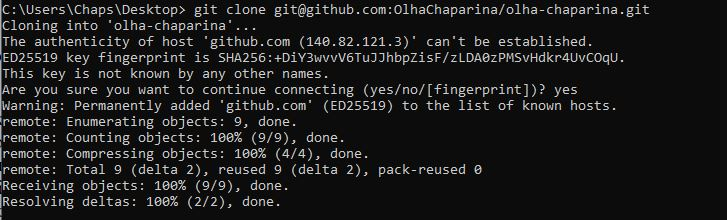

- git config --global user.name - встановлює ім'я користувача для всіх
репозиторіїв на цьому комп'ютері
- git config --global user.email - встановлює електронну адресу
користувача для всіх репозиторіїв на цьому комп'ютері
- git init - ініціалізує новий локальний репозиторій Git в поточній директорії
- git status - перевірка статусу поточного репозиторію, вказує, які файли були
змінені та які з них готові до коміту
- git add - додавання файлів до індексу (staging area), щоб вони були готові до
коміту
- git commit - коміт змінених файлів, збереження змін в історії репозиторію з
коротким описом змін
- git log - перегляд історії комітів в поточній гілці
- git checkout - переміщення між гілками та комітами, відновлення старих версій
файлів
- git branch - перелік наявних гілок та створення нових гілок
- git push - відправка змін до віддаленого репозиторію
- git merge - об'єднання двох або більше гілок в одну
- git clone - копіювання віддаленого репозиторію на локальний комп'ютер
.gitignore - це файл, який містить список файлів та каталогів, які повинні бути проігноровані Git під час
збереження змін в репозиторії.
- git revert - створює новий коміт, який скасовує зміни певного коміту.
- git reset - повертає репозиторій до попереднього стану або видаляє коміти з історії.
- git rebase - переносить зміни з однієї гілки на іншу, змінюючи історію комітів.
- git cherry-pick - застосовує зміни певного коміту до поточної гілки.
- git stash - тимчасово зберігає незакомічені зміни у стеку стешів, щоб можна було працювати з іншою гілкою
або відновити їх пізніше.
